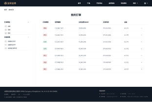

Upway Gold Website
2024
Product & Website Design
Finally you arrive at the ending of the article. This is a good place to wrap things up and conclude with takeaways. If you’re writing something for a more traditional publication, it can be nice to end on an anecdote that mirrors the theme of the piece. If you’re putting together some content for a company blog, you’ll probably just want to close out in a tidy way and include a CTA of some kind. Writers should take note: Usually, when you write a draft, you finally get to the main point at the end. An old editing trick is to take that idea and put it at the top of the piece. Consider whether that would work for you in this case.
